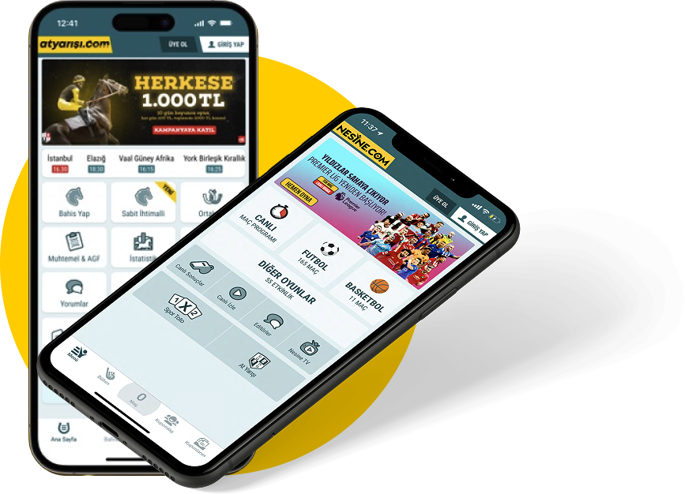
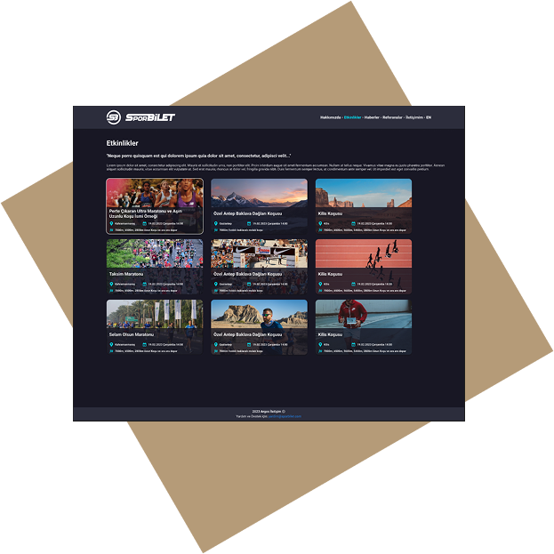
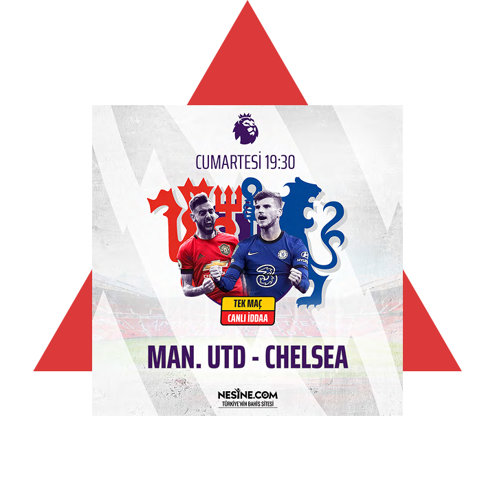

Seasoned UI Designer with 10+ years of industry experience, specializing in intuitive interfaces for data-rich environments. I've mastered the art of transforming complex data into clear, actionable designs—maximizing clarity even within the tightest spaces.

I worked 7 years at one of Turkey’s most popular sports betting companies, starting as a Senior UI Designer and contributing to numerous projects. I designed engaging screens for iOS, Android, and web platforms

I designed an interactive website for a company that organizes sports events, allowing users to browse events and register for the ones they’re interested in directly on the same page.

I frequently use Photoshop and Illustrator to create visually compelling designs. One of my strongest skills is motion design, as I have extensive experience working with After Effects.
Hi, I’m Tunç. Born in 1986, I live in Istanbul and music is an essential part of my life—I play the oud, drums, and piano.
Professionally, I have been working as a designer for 15 years without a break. Driven by my desire to work in a more international environment, I left my last job and am currently studying English and German.
I look forward to meeting new people and exploring new opportunities. Thank you for your interest!
Download my resume to learn more about my educational background, work experience, and skills.
Download Resume (PDF)